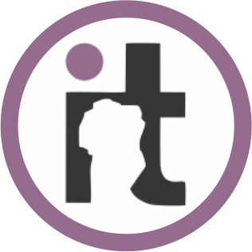

El Técnico Superior en Desarrollo de Software estará capacitado para producir componentes de software, lo que comprende su diseño detallado, construcción y realización de verificación unitaria de los mismos, así como su depuración, optimización y mantenimiento; desarrollando las actividades descriptas en el perfil profesional y cumpliendo con los criterios de realización establecidos para las mismas en el marco de un equipo de trabajo organizado por proyecto.